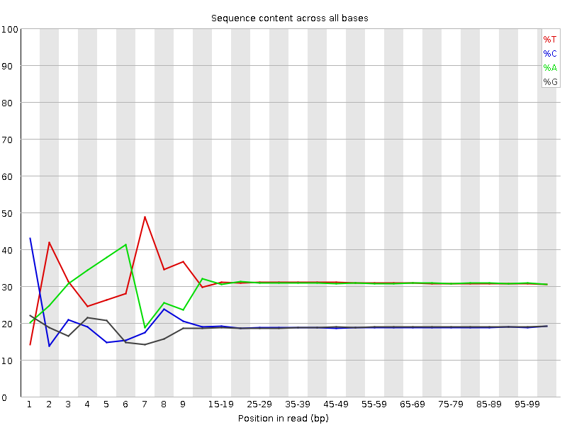
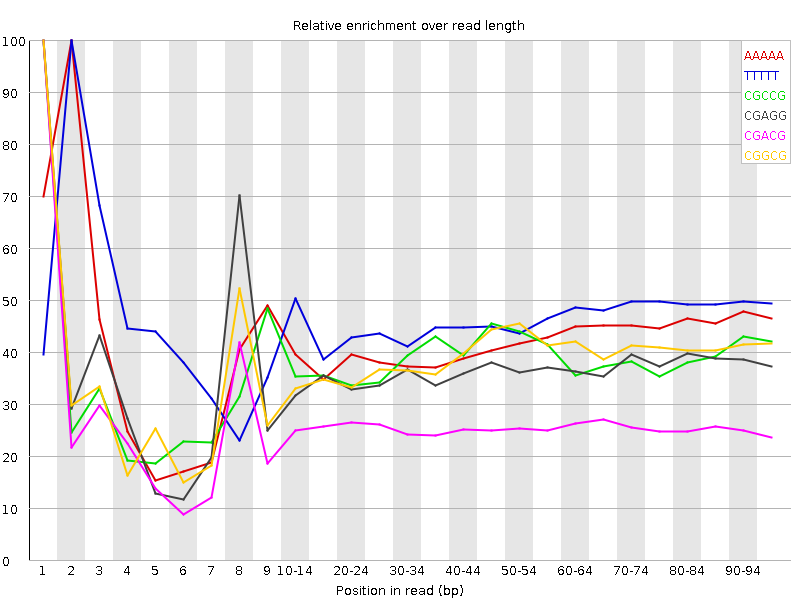

![[OK]](Icons/tick.png) Basic Statistics
Basic Statistics
| Measure | Value |
|---|---|
| Filename | c3.1.fq |
| File type | Conventional base calls |
| Encoding | Sanger / Illumina 1.9 |
| Total Sequences | 24653482 |
| Filtered Sequences | 0 |
| Sequence length | 100 |
| %GC | 38 |
Per base sequence quality
Per sequence quality scores
![[FAIL]](Icons/error.png) Per base sequence content
Per base sequence content

Per base GC content
![[WARN]](Icons/warning.png) Per sequence GC content
Per sequence GC content
Per base N content

Sequence Length Distribution
Sequence Duplication Levels

Overrepresented sequences
No overrepresented sequences
Kmer Content

| Sequence | Count | Obs/Exp Overall | Obs/Exp Max | Max Obs/Exp Position |
|---|---|---|---|---|
| AAAAA | 16326705 | 2.4711492 | 5.876837 | 2 |
| TTTTT | 16863725 | 2.470153 | 5.313113 | 2 |
| CGCCG | 1264115 | 2.115591 | 5.4755697 | 1 |
| CGAGG | 1931645 | 2.02825 | 5.546868 | 1 |
| CGACG | 1951315 | 2.0278568 | 7.8366394 | 1 |
| CGGCG | 1156495 | 1.955569 | 5.0143967 | 1 |
| CGCGG | 1073360 | 1.8149923 | 5.842551 | 1 |
| CGCGA | 1654345 | 1.7192378 | 6.260828 | 1 |
| TCGAG | 2667045 | 1.7098539 | 5.2645845 | 7 |
| CTCGA | 2691425 | 1.7077594 | 8.479816 | 1 |
| CGAGA | 2519395 | 1.6258142 | 5.617957 | 1 |
| CTGGA | 2448840 | 1.5699615 | 6.8670664 | 1 |
| CTTTT | 6545360 | 1.5541222 | 6.200757 | 1 |
| CGCCA | 1510320 | 1.5534406 | 5.2399006 | 1 |
| CGATC | 2438315 | 1.5471563 | 5.1682606 | 4 |
| ATCGA | 3924505 | 1.546301 | 5.656115 | 6 |
| CTTCG | 2411460 | 1.5201219 | 5.990597 | 1 |
| CGAAG | 2341445 | 1.5109795 | 5.3564405 | 1 |
| CTCCA | 2403265 | 1.5092523 | 5.651427 | 1 |
| CCGGC | 874540 | 1.4636081 | 5.1911035 | 1 |
| CTCGT | 2306620 | 1.4540337 | 7.2591195 | 1 |
| CTCGC | 1406250 | 1.4369519 | 6.3998895 | 1 |
| CTCGG | 1360190 | 1.4043117 | 7.7973504 | 1 |
| CTGGC | 1317135 | 1.35986 | 5.0336504 | 1 |
| CGAAA | 3399110 | 1.3480946 | 5.796903 | 1 |
| GAATC | 3257020 | 1.2833041 | 5.414261 | 4 |
| AATCG | 3162620 | 1.2461092 | 5.100281 | 5 |
| CTTGG | 1921720 | 1.2239755 | 5.6567364 | 1 |
| CTTGA | 3068075 | 1.2009616 | 5.422205 | 1 |